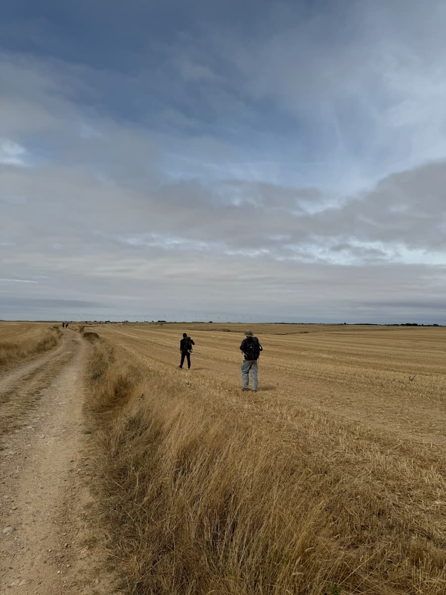
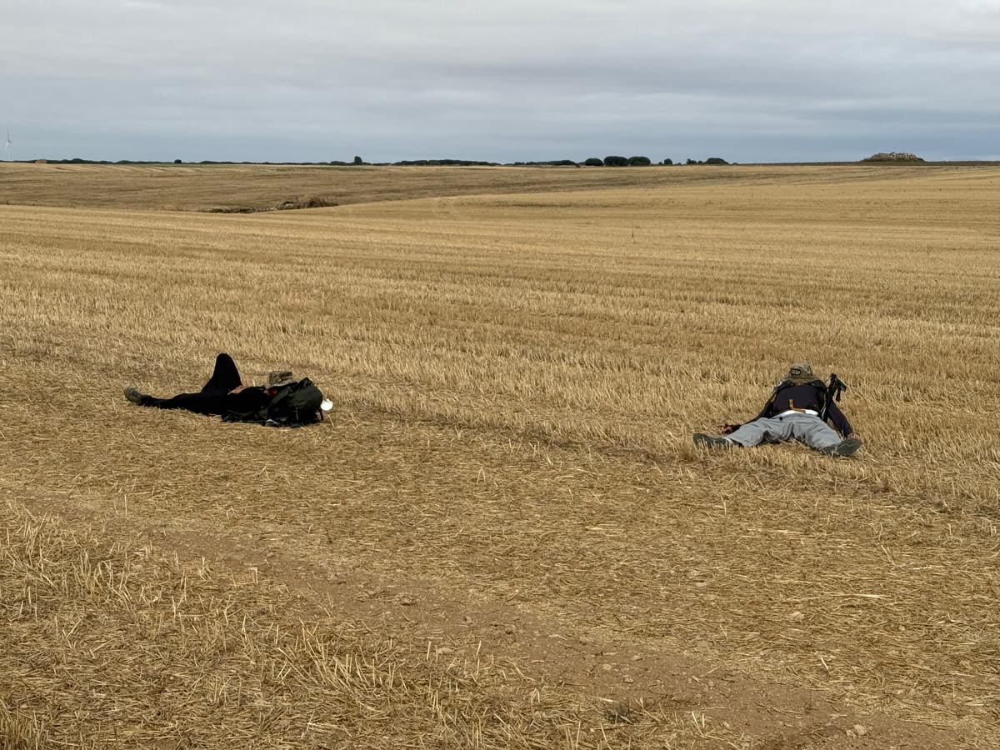
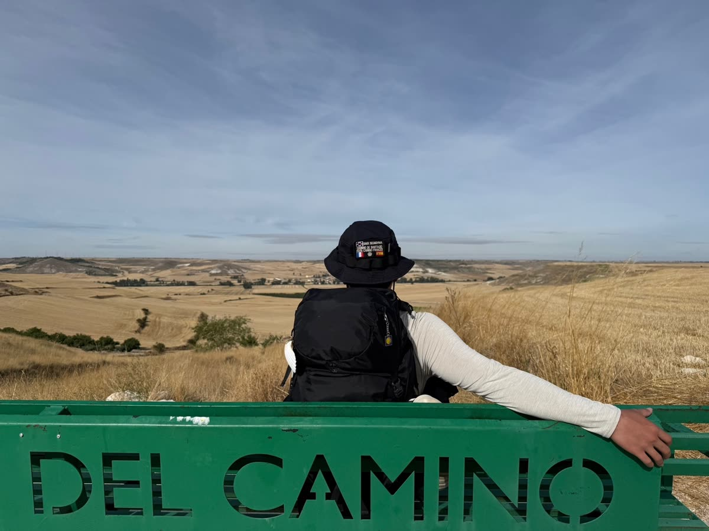
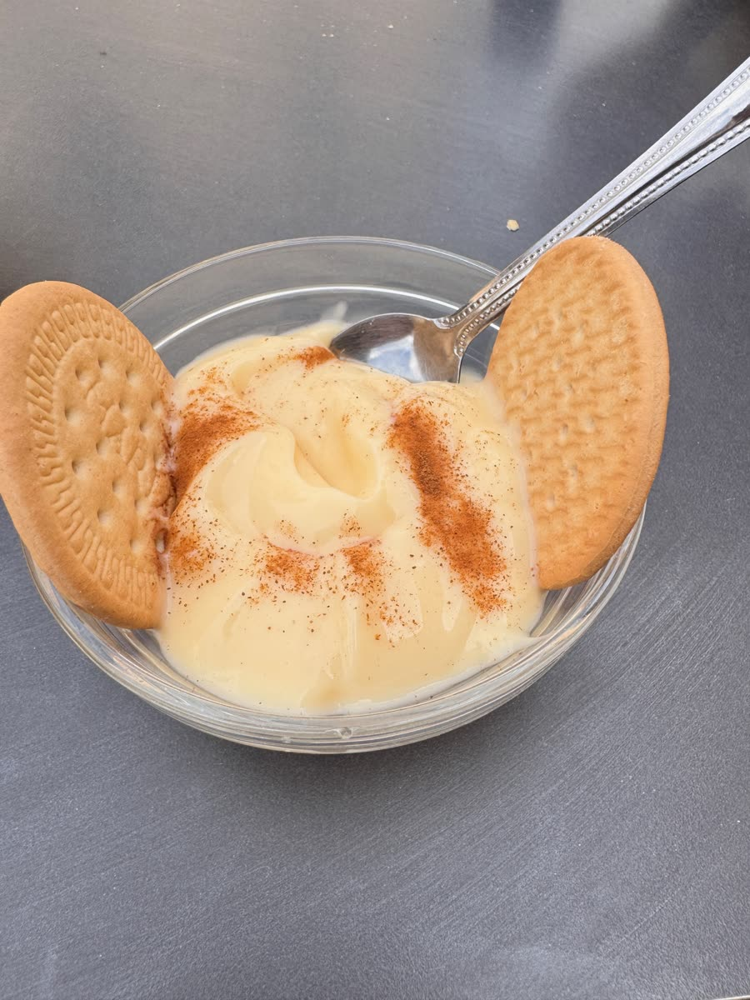
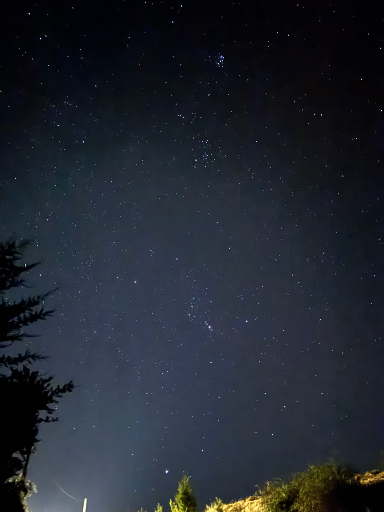
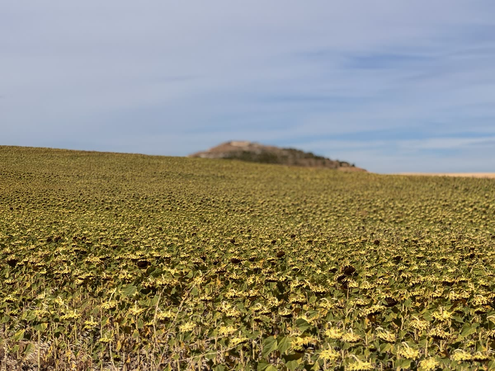
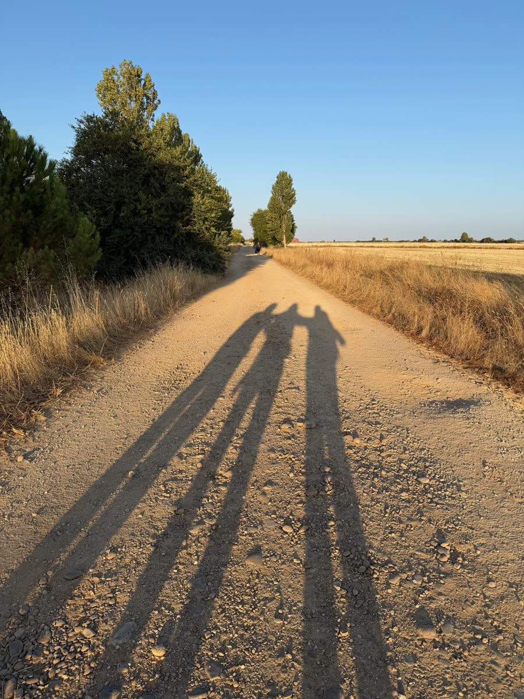
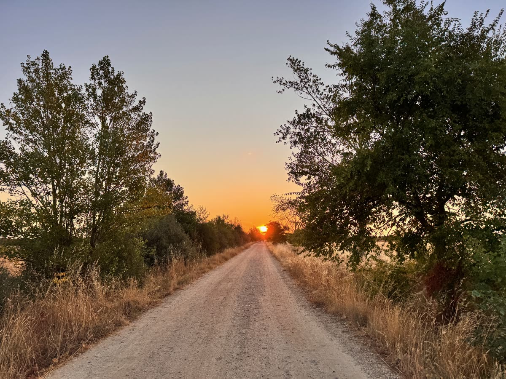

며칠째 같은 밀밭,
같은 직선 길.
그래서 누웠다.
부르고스를 지나면 '메세타'가 시작된다. 스페인 한가운데 있는 높고 넓은 평원인데, 순례자들 사이에선 지루하기로 유명하다. 산도 없고 그늘도 거의 없고, 마을과 마을 사이엔 밀밭이랑 하늘뿐이다. 어떤 사람들은 이 구간을 버스로 건너뛰기도 한다. 우리는 그냥 걸었다.

메세타 첫날, 부르고스에서 온타나스까지 31km를 걸었다. 걷다 보니 길도 똑같고 밀밭도 똑같고 하늘도 똑같았다. 어디쯤 왔는지 감이 안 왔다. 그러다 길옆 밀밭에 배낭을 던져 놓고 그냥 벌러덩 누웠다.
그렇게 20분 동안 하늘만 봤다. 구름이 천천히 지나가는 것 말고는 아무 일도 없었다. 그 20분 동안 이상하게 아무 생각이 안 났다. 다리 아픈 것도, 남은 거리도, 한국에 두고 온 일들도. 스페인 밀밭 한가운데서 대자로 누워 있는 한국 사람들. 지나가던 순례자들이 보면 좀 웃겼을 것 같다.

잠깐 쉬어 가는 벤치도 있었다. 'EL CAMINO'라고 크게 쓰인 초록 벤치에 앉아서 다리를 쭉 뻗고 평원을 내려다봤다. 메세타는 걸을 땐 지루한데, 앉아서 보면 생각보다 넓고 예쁘다. 그날 온타나스에서는 바나나랑 커스터드 디저트를 먹었는데, 계피 가루 뿌린 노란 크림에 비스킷 두 개가 꽂혀 나왔다. 귀여워서 사진부터 찍었다.


다음 날은 더 길었다. 온타나스에서 프로미스타까지 34km. 해 뜨기 전에 나섰는데, 하늘에 별이 진짜 쏟아질 것처럼 많았다. 은하수가 이런 건가 싶었다. 한국에서는 볼 수 없는 하늘이었다. 그런데 감동도 잠깐, 어두운 길을 걷다가 밭에 돌아가던 스프링클러 물을 맞았다. 별 보다가 물벼락. 메세타는 끝까지 사람을 가만두지 않는다.

그날은 솔직히 "이거 끝까지 걸을 수 있을까?" 하는 생각이 처음 들었다. 하루 30km 넘게 이틀 연속이면 몸이 먼저 말을 한다. 그런데 신기하게도 그 고비를 넘기고 나니까, 그 뒤로는 하루 30km가 그냥 하루치가 됐다. 몸이 길에 적응한 거다.
메세타엔 해바라기 밭도 많다. 처음 봤을 땐 끝없이 펼쳐진 해바라기가 너무 신기해서 계속 사진을 찍었다. 그런데 며칠 지나니까 그냥 지나치게 됐다. 9월이라 해바라기들이 다 고개를 숙이고 있기도 했고. 그날 일기에 이렇게 적었다. 익숙해지니까 감흥이 옅어진다고. 그런데 그 말 다음에 꼭 이런 생각이 따라왔다. 익숙한 것들이 사실 제일 소중한 거라고. 매일 같이 걷는 사람들, 매일 먹는 밥, 매일 보는 밀밭.

까리온에서 떼라디요스로 가는 날엔 중간에 마을도 가게도 없는 구간이 한참 이어졌다. 물이랑 간식을 미리 챙겨야 하는 길이다. 아침 해가 등 뒤에서 뜨니까, 길 위에 우리 셋 그림자가 길게 나란히 섰다. 하도 길어서 다리가 3m는 되는 것 같았다. 그날 400km 표지석도 지났다. 벌써 이만큼 왔다.

그리고 메세타의 하루는 노을로 끝난다. 산이 없으니까 해가 땅 끝까지 그대로 내려간다. 하늘 전체가 주황색으로 물드는 걸 보고 있으면, 낮에 지루하다고 투덜댄 게 좀 미안해진다.

다들 메세타가 지루하다고 한다. 맞다, 지루하다. 그런데 32일 중에 제일 생각이 많이 나는 것도 이상하게 메세타다. 아무것도 없어서 오히려 다 보였던 길. 그리고 아마 다시 가도, 그 밀밭에 또 누울 것 같다.
For pilgrims passing by
After Burgos comes the Meseta: a high, wide plateau of wheat fields and straight roads, famous among pilgrims for being boring. On our first Meseta day, 31 km to Hontanas, we threw our packs down and lay in a wheat field for 20 minutes, just watching the sky. The next morning, walking 34 km to Frómista, we saw a sky full of stars and got soaked by a sprinkler. The sunflowers stopped feeling special after a few days, and that made me think about how the ordinary things are the precious ones. Everyone says the Meseta is boring. It is. And it's the part I miss most.
순례길 32일 연재
- 1편 · 오늘 저녁은 뭘 먹지?
- 2편 · 오늘은 어디서 자지?
- 3편 · 피레네를 하루 만에 넘은 날
- 4편 · 밀밭에 20분 누워 있던 날 (지금 읽는 글)
- 5편 · 산티아고에 도착한 아침
- 6편 · 순례길 준비는 이렇게 했다
🕯️ 오늘 밤 이야기는 여기까지.
다음 편은 마지막, 산티아고에 도착한 아침의 이야기입니다.